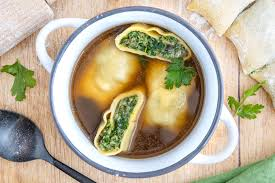

Germany
A beautiful country filled with small historical villages and big vibrant cities, Germany is the perfect place for people who like a mix of historical and modern culture.
Places worth visiting:
- Brandenburg Gate - a gate in Berlin with blue horses standing on top, this gate is amazing at day time, and at night time.
Brandenburg Gate - Thomas Wolf - Wikimedia Commons - CC BY SA
- Neuschwanstein Castle - a catsle located in Bavaria, Germany, this castle is a magnificent work of architecture.

Neuschwanstein Castle - Softeis - Wikimedia Commons - CC BY SA
- Christmas Market - One of my personal favourites, this market only appears in Christmas, selling a variety of festive treats such as lebkuchen and hot chocolates (and it's perfect for the kids!).

Christmas Market - Juergen Sack - iStock photos - Public Domain
Popular Food:
- Schnitzel - Traditionally pork or chicken with a golden crumb, sometimes served with a fried egg.
Schnitzel - Thomas Kohler - Wikimedia Commons - CC BY
- Maultaschen - Pasta filled with spinach, sausage, and served either in a broth or with scrambled egg.

Maultaschen in broth - Advanco GmbH - CC BY SA
- Lebkuchen - a classic German gingerbread, slightly soft and glazed in glossy icing, this is a staple at a German Christmas.
Lebkuchen - Roma Doleman - CC BY SA
If you want to learn about another country, click one of these links!
Singapore
England
California
Rarotonga
Home